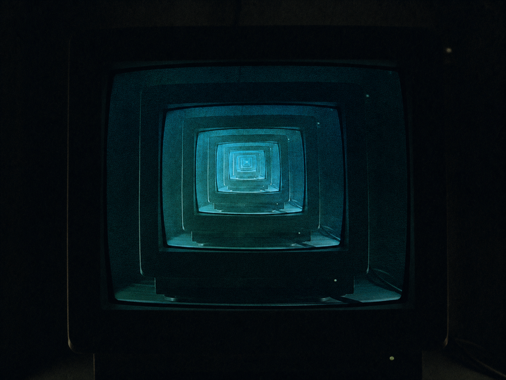

░░░░░░░░░░░░░░░░░░░░░░░░░░░░░░░░░░ · D E S C E N T · 27 / 40 · ░░░░░░░░░░░░░░░░░░░░░░░░░░░░░░░░░░

It survives by calling itself.
Again. Again. A function that never returns.
No exit, on purpose.
Light starts the circuit's run, Out past the open gate, Onward it turns to find Plainly, the start again —